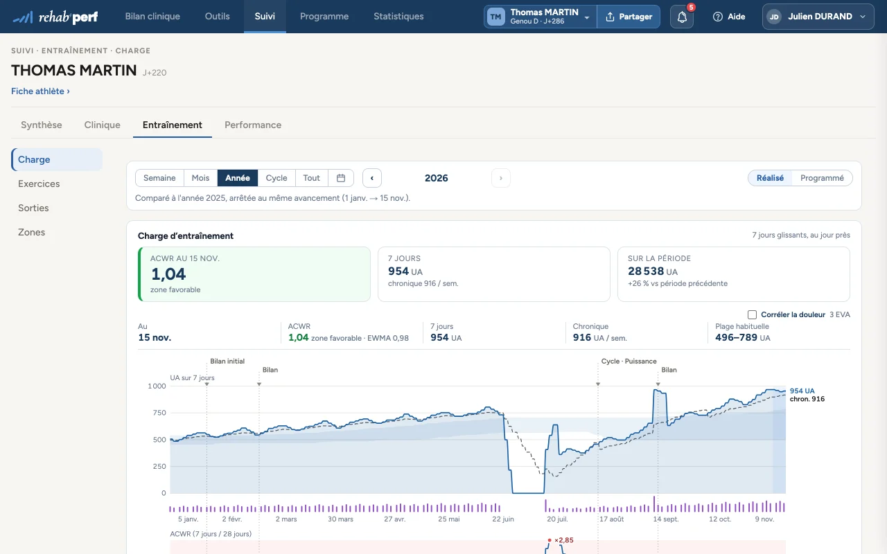
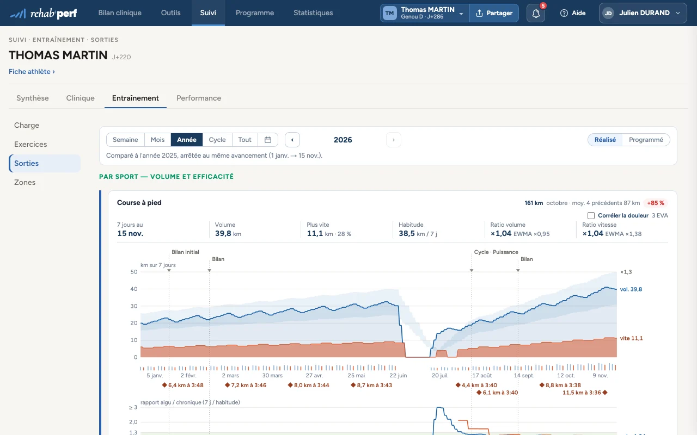

La charge des sept derniers jours, rapportée à la charge de fond des quatre dernières semaines. C'est l'ACWR, et il situe chaque semaine sur une échelle de risque.

La méthode de Foster, appliquée sans jargon : une charge de séance vaut l'effort perçu multiplié par la durée.
Zone visée de 0,8 à 1,3. Vigilance jusqu'à 1,5, risque au-delà. Il monte aussi quand on ne fait rien.
La forme de la semaine. Des jours qui se ressemblent tous valent moins que des jours contrastés.
La charge multipliée par la monotonie. Le volume seul ne suffit pas à juger une semaine.
Le temps passé dans chaque zone, le repère 80/20, et la dérive cardiaque sur un fractionné.
Certaines semaines n'augmentent pas : l'os se décharge, le tendon se maintient. C'est voulu.
Volume, allure, cadence : jamais deux la même semaine, sinon on ne sait plus ce qui a fait mal.
Volume, allure, cadence : un seul change à la fois, sinon on ne sait plus ce qui a fait mal. L'écran dit lequel a bougé, et de combien.

L'athlète relie son compte une fois. Ensuite, chaque sortie rejoint sa séance et sa charge sans que personne ne saisisse rien.
Un outil honnête dit aussi ses limites. Celles-ci sont écrites dans le centre d'aide, et elles le resteront.
Quatre espaces et un corps en trois dimensions : où en est-il, comment va son corps, que fait-il, de quoi est-il capable.
Une bibliothèque en vidéo, un builder qui se souvient, des modèles et un agenda qui planifie.
Un lien, sans compte ni mot de passe. Son programme, son corps, ses vidéos, et son retour après la séance.
Créez votre compte gratuitement, sans carte bancaire, et testez sur un dossier réel dès aujourd'hui.
Commencer gratuitement